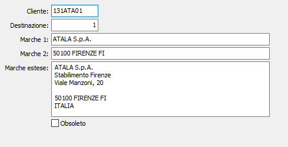

Marche
La tabella consente di inserire le marche di un cliente in base alla destinazione. In fase di inserimento il programma propone i dati letti dall’anagrafica clienti se il codice destinazione è 0, dalle destinazioni se il codice destinazione è significativo.

CLIENTE: Campo alfanumerico di 8 caratteri per identificare il cliente. Sul campo sono attive le funzioni di ricerca (F9) sulla tabella stessa.
DESTINAZIONE: Codice numerico che specifica la destinazione del cliente selezionato. Se il codice è 0 si intende nessuna destinazione. Sul campo sono attive le funzioni di ricerca (F9) sulla tabella stessa in base al cliente selezionato.
MARCHE 1: Campo alfanumerico di 30 caratteri che indica le marche 1. In fase di inserimento, su questo campo, viene proposta la ragione sociale del cliente, che vi è in anagrafica clienti se la destinazione è 0, o dalle destinazioni se vi è un codice destinazione valido per il cliente.
MARCHE 2: Campo alfanumerico di 30 caratteri che indica le marche 2. In fase di inserimento, su questo campo, viene proposto il luogo dove è sito il cliente, che vi è in anagrafica clienti se la destinazione è 0, o dalle destinazioni se vi è un codice destinazione valido per il cliente.
MARCHE ESTESE: Campo Memo che indica le marche estese. In fase di inserimento, su questo campo, vengono proposti: la ragione sociale, i dati aggiuntivi, l’indirizzo, l’indirizzo 2, il luogo e la nazione del cliente, che vi è in anagrafica clienti se la destinazione è 0, o dalle destinazioni se vi è un codice valido per il cliente.
OBSOLETO: flag attivabile dall’utente per inibire il possibile utilizzo dell’elemento di tabella in esame nelle successive transazioni.